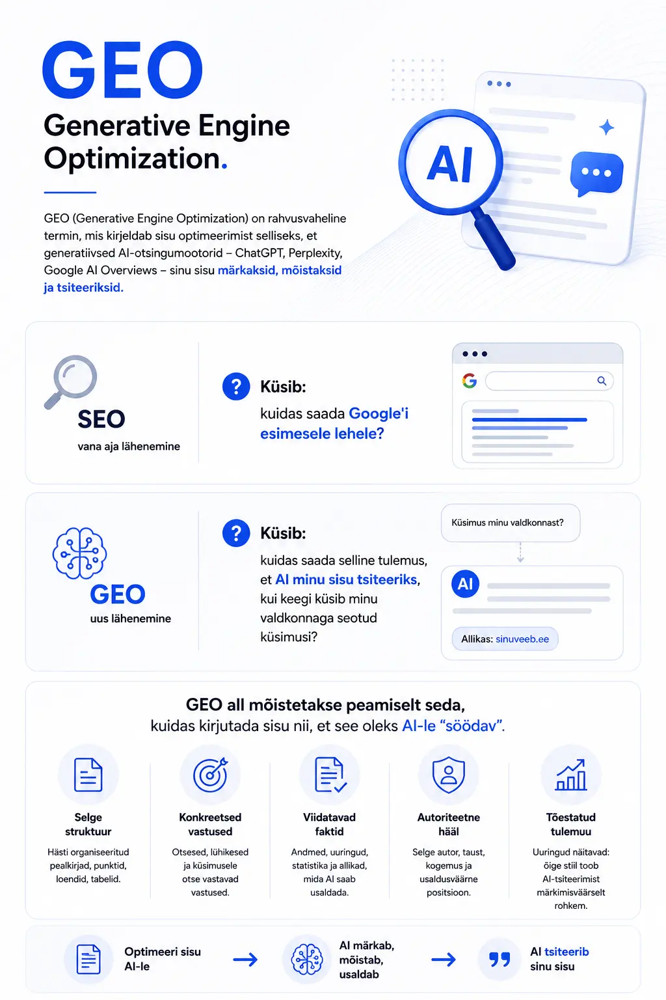
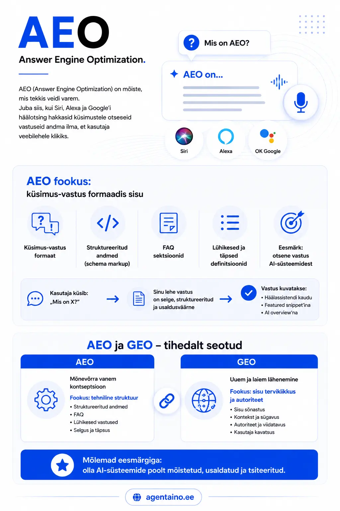
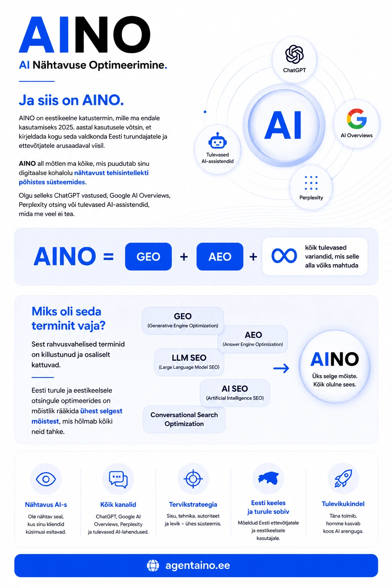

Alles hiljuti küsis üks vana tuttav, et ta on kuulnud, et kas nüüd peaks tegema "GEO-d". Küsisin vastu, et kas ta teab, mis see üldse on. "No see on nagu SEO, aga AI jaoks," vastas ta hoobilt ja lisas kohe juurde, et keegi soovitas ka mingit "AEO-d", kuigi mida see täpselt teeb, ei osanud ta öelda. Olin ise veidi aega varem kokku puutunud mõistega "SGE" ja sellega, kuidas Google'i otsingutulemused hakkavad välja nägema nagu keegi on neile AI-vastused juurde lisanud. Ja muide nii see tänaseks juba ongi, et Google keeras vanad sinised lingid maha ja tõstis esikohale AI vastuse.
Terminid on palju ja rohkem on veel tulemas. Kõik tunduvad tähtsad. Ja kui sul pole kellegi käest küsida, kes ei hakka kohe konsultatsioonitundi müüma, on raske aru saada, mis millest erineb. Ja mis üldse su ettevõtte jaoks korda võiks minna.
Selles artiklis panen need kõik kõrvuti. Ilma tarbetu akadeemilisuseta.
Kust see kõik alguse sai
Mõned aastad tagasi hakkas Google testima otsingutulemuste lehte, kus vastus ei olnud enam ainult nimekiri linkidest, vaid üks konsolideeritud lõik teksti, mis genereeritud tehisintellekti poolt. Seda kutsuti SGE-ks (Search Generative Experience). Idee oli lihtne: miks suruda kasutaja kümmet linki läbi klikkama, kui saab anda ühe hea vastuse kohe?
Samal ajal hakkasid ChatGPT, Claude, Perplexity ja teised AI-otsingumootorid küsimustele vastama ilma, et kasutaja üldse Google'it avaks. Küsid midagi ja saad vastuse. Koos allikatega või ilma.
See muutis mängu reegleid. Traditsiooniline otsingumootoritele optimeerimine oli seni tähendanud seda, et sinu leht jõuab otsingutulemuste esimesele lehele, kust inimene siis vajutab sinu lingile. Kuid mis saab siis, kui vastus antakse ära juba otsingutulemuste lehel enne, kui inimene kuhugi vajutab? Sellest fundamentaalsest klikkide kadumisest kirjutasin süvitsi artiklis: SEO on surnud? Ei - aga reeglid on muutunud.
Või mis saab siis, kui ChatGPT vastabe küsimusele ja su brändi nime ei mainita kordagi — sest AI lihtsalt ei "tea" sind? Sellest pingest sündisid uued terminid.
GEO - Generative Engine Optimization

GEO (Generative Engine Optimization) on rahvusvaheline termin, mis kirjeldab sisu optimeerimist selliseks, et generatiivsed AI-otsingumootorid — ChatGPT, Perplexity, Google AI Overviews — sinu sisu märkaksid, mõistaksid ja tsiteeriksid.
- Klassikaline vana aja SEO küsib: kuidas saada Google'i esimesele lehele?
- GEO küsib: kuidas saada selline tulemus, et AI minu sisu tsiteeriks, kui keegi küsib minu valdkonnaga seotud küsimusi?
GEO all mõistetakse peaimiselt seda, kuidas kirjutada sisu nii, et see oleks AI-le "söödav". Selge struktuur, konkreetsed vastused, viidatavad faktid, autoriteetne hääl. Teadusuuringud on näidanud, et teatud stiilis kirjutatud sisu saab AI-tsiteerimist märkimisväärselt rohkem kui tavaline blogipostitus.
AEO - Answer Engine Optimization

AEO (Answer Engine Optimization) on mõiste, mis tekkis veidi varem. Juba siis, kui hääleassistendid ja nutiseadmed hakkasid küsimustele otseseid vastuseid andma ilma, et kasutaja veebilehele klikiks.
AEO fookus on küsimus-vastus formaadis sisu loomisel. Struktureeritud andmed (Schema markup), FAQ sektsioonid, lühikesed ja täpsed definitsioonid. Need kõik on AEO tööriistad. Eesmärk on see, et kui keegi küsib "mis on X?", siis tuleks sinu leheküljelt pärit vastus otse esiletõstetud vastusena (Featured Snippet) või AI overview'na välja.
AEO ja GEO on omavahel tihedalt seotud. Mõlemad tegelevad sellega, et saada AI-süsteemide poolt tsiteerituks. AEO on mõnevõrra vanem kontseptsioon ja rohkem keskendunud tehnilisele struktuurile; GEO on laiem ja hõlmab ka seda, kuidas sisu sõnastatakse ja milline on selle autoriteet.
SGE - Search Generative Experience
SGE on Google'i enda toode ja termin. See tähistab AI-genereeritud vastusteplokki, mis ilmub Google otsingutulemuste lehe ülaossa, vahetult enne tavalisi linke. Sisuliselt on see Google'i versioon sellest, mida Perplexity ja ChatGPT on teinud otsimisega.
SGE on oluline, sest see muudab otsimiskogemust fundamentaalselt. Kasutaja saab vastuse ilma klikita. Sinu veebilehe külastatavus langeb isegi siis, kui sa oled otsingutulemustes esikohal. Samal ajal avab SGE uue võimaluse: kui AI tõmbab oma vastuse sinu allikast ja viitab sellele, saad hoopis teist tüüpi nähtavuse.
SGE ei ole eraldi optimeerimisala nagu GEO või AEO — see on rohkem kontekst, milles GEO ja AEO tähtsus kasvab. Kui Google'i otsing muutub AI-põhiseks, siis AI-nähtavuse muutub SEO-nähtavuseks.
AINO - AI Nähtavuse Optimeerimine

Ja siis on AINO.
AINO on eestikeelne katustermin, mille ma endale kasutamiseks 2025. aastal kasutusele võtsin (ma usun, et seda on ka juba varem kasutatud), et kirjeldada kogu seda valdkonda Eesti turundajatele ja ettevõtjatele arusaadaval viisil. AINO all mõtlen ma kõike, mis puudutab sinu digitaalse kohalolu nähtavust tehisintellekti põhistes süsteemides. Selle distsipliini tervikliku baasvundamendi panin paika suures käsiraamatus: Mis on AINO? AI Nähtavuse Optimeerimise juhend.
AINO = GEO + AEO + kõik tulevased variandid, mis selle alla võiks mahtuda.
Miks oli seda terminit vaja? Sest rahvusvahelised terminid on killustunud ja osaliselt kattuvad — GEO, AEO, LLM SEO, AI SEO, conversational search optimization. Eesti turule ja eestikeelsele otsingule optimeerides on mõistlik rääkida ühest selgest mõistest, mis hõlmab kõiki neid tahke.
Lisaks on Eesti kontekstis üks oluline eripära, millest rahvusvahelised juhendid üldse ei räägi.
Miks on Eesti kontekst erinev?
Kui sa optimeerid ingliskeelset sisu, konkureerid sa miljonite artiklitega. AI-mudelid on inglise keele pealt treenitud tohutu andmehulgaga. Seal on raskem olla ainulaadne allikas.
Eesti keeles on olukord teistsugune. Eestikeelse kvaliteetse sisu hulk on AI-mudelite treeningandmetes märkimisväärselt väiksem. See aga tähendab kahte asja.
Esiteks: hea, struktureeritud eestikeelne sisu paistab silma ja jõuab AI-allikatesse kiiremini, kui selle mahu pealt võiks oodata. Kes on esimene, kes kirjutab mingi eestikeelse teema kohta autoriteetselt ja selgelt — see jääb tõenäoliselt "vastuseks" pikaks ajaks.
Teiseks: paljud AI-mudelid vastavad eesti keeles halvemini just seetõttu, et nad pole selles keeles piisavalt harjutenud ning välja õpetatud. Eestikeelne sisu, mis on AI-le hästi söödav, ei aita ainult sinu ettevõttel paremini nähtav olla, see aitab AI-süsteemidel üldiselt eesti keeles paremini vastata. Selline väike ühiskondlik lisandväärtus siis pealekauba.
Kuidas need asjad omavahel suhestuvad?
| Termin | Mida tähistab | Kes kasutab |
|---|---|---|
| SEO | Otsingumootoritele optimeerimine (peamiselt Google linkide-põhine otsing) | Kõik digiturundajad |
| AEO | AI vastusemootoritele optimeerimine (häälassistendid, featured snippets, FAQ-d) | Sisutootjad, tehniline SEO |
| GEO | Generatiivsetele AI-otsingumootoritele optimeerimine (ChatGPT, Perplexity, Claude, Google AI Overviews) | Kasvav hulk turundajaid globaalselt |
| SGE | Google'i konkreetne AI-vastusteplokk otsingutulemustes | Google'i kontekstis oluline |
| AINO | AI nähtavuse optimeerimine. Eestikeelne katustermin, hõlmab GEO + AEO + tuleviku variandid | Eesti turundajad ja ettevõtjad |
Mis sellest kõigest võiks järeldada?
See, et termineid on palju, ei tähenda, et tegu oleks eraldi planeetidega. GEO, AEO ja SGE on erinevad vaatenurgad samale nähtusele: AI muudab seda, kuidas inimesed infot otsivad ja leiavad, ja seega muutub ka see, kuidas ettevõtted peavad oma digitaalset kohalolu üles (ja ümber) ehitama.
AINO on lihtsalt viis öelda eesti keeles: meie tegeleme sellega.
Kui su ettevõte soovib olla nähtav mitte ainult Google'i lingikogudes, vaid ka ChatGPT vastustes, Perplexity kokkuvõtetes ja Google'i AI-plokkides, siis on aeg mõelda sellele, kuidas sinu sisu on üles ehitatud, kes seda kirjutab ja mis eesmärgil. Alustada pole keeruline, selleks lõin Sulle samm-sammulise juhise: Praktiline checklist AI-vastustesse jõudmiseks.
Alustada tuleb kohe.
Kas Sinu bränd on AI vastustes olemas?
Ära jäta oma ettevõtte tulevikku juhuse või konkurentide otsustada. Vaatame Sinu veebilehe AI-nähtavusele otsa ja paneme paika reaalse tegevuskava.
Broneeri tasuta konsultatsioon →Mina olen Feliks Stavitski, digitaalturunduse konsultant ja AINO (AI Nähtavuse Optimeerimine) mõiste ellu kutsuja Eestis. Ma aitan Eesti ettevõtetel muutuda nähtavaks ka AI-põhistes otsisüsteemides.